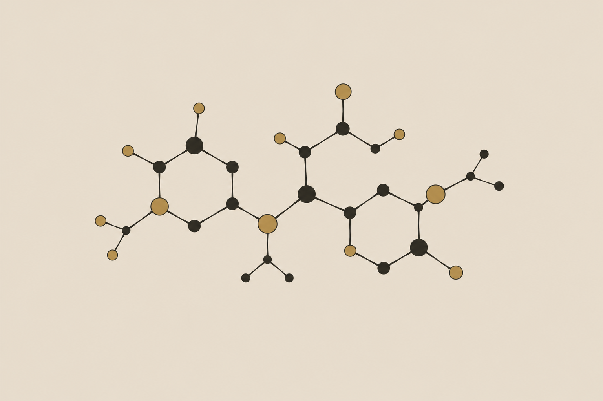
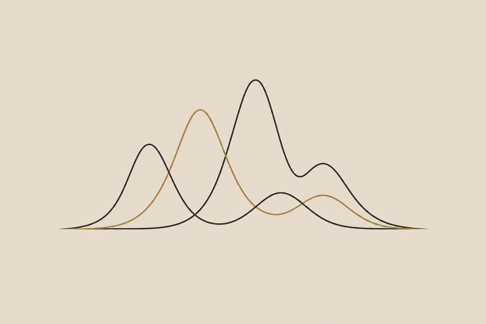
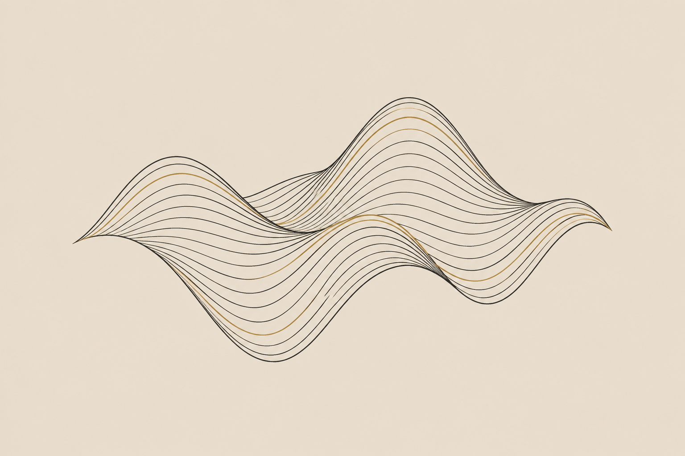
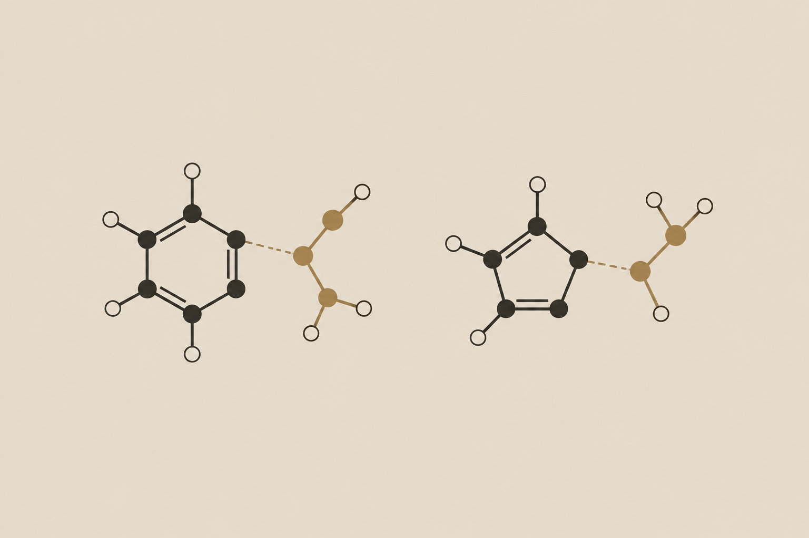
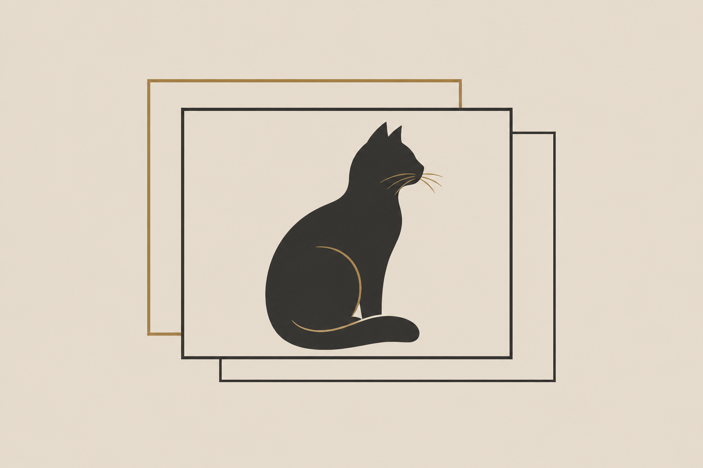

Machine learning
Polymer property prediction
An independent PyTorch project exploring hierarchical molecular graph models for polymer-property prediction, with local and global updates.
Python · PyTorchView code
Selected work
Short overviews of my work in machine learning, scientific computing, and software.

Machine learning
An independent PyTorch project exploring hierarchical molecular graph models for polymer-property prediction, with local and global updates.

Machine learning
A team project using machine learning to identify nitrogen-containing molecules from simulated spectral data.
Software engineering
Built repeatable evaluation pipelines for ingredient extraction, comparing model and prompt variants against clinician annotations.

Scientific computing
Implemented finite-difference schemes for heat and wave equations in MATLAB, exploring stability and the relationship between spatial and temporal step sizes.

Computational chemistry
Compared graph-based fragmentation approximations with full-system electronic-structure calculations in the Iyengar Group at Indiana University.

Machine learning
Co-developed and trained a PyTorch convolutional neural network for cat-breed classification, including image cleaning and augmentation.
Software prototype
An experimental drug-coverage arbitration prototype combining agent-assisted decisions with smart-contract escrow on Somnia.